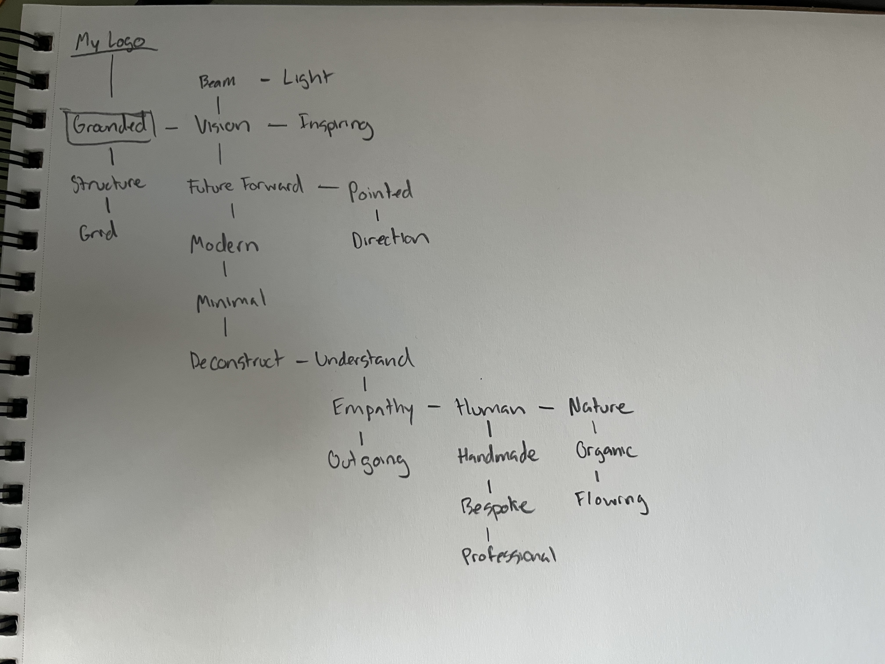
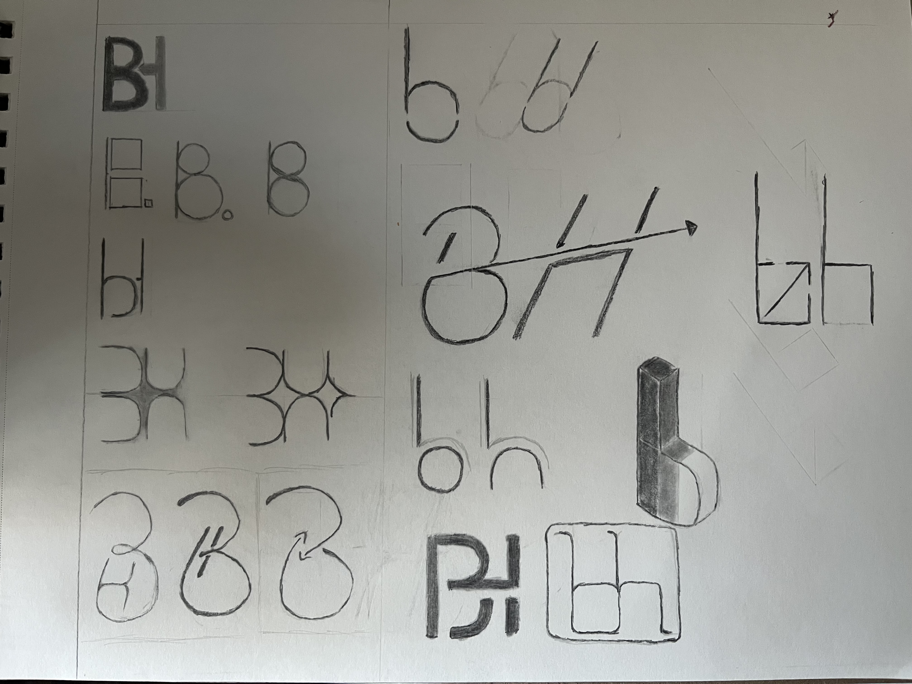
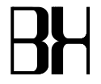

Logo
A “BH” monogram built from simple shapes, with a star form in the negative space where the two letters meet.
Initial Design

Mind Map
I opted for a monogram logo based on the initials of my name, which I found to be a unique challenge. I started the process by creating a mind map for my logo based on the idea of being “grounded.” Through word associations and stream-of-consciousness thinking, I eventually landed on the idea of having a minimalist, modern, and dynamic design.

Logo Sketches
I spent three days drawing rough sketches on sticky notes before I felt I had some basic ideas to work with. I chose 12 ideas to expand on and created different versions of my favorite ones.
Logo SVGs
My final design explored using basic shapes to create the B and H forms. I made the innermost stems of each letter thicker and curve into the letter to create a star- or shimmer-like form in the negative space of the logo. To help the logo read more clearly as “BH,” I squared off the outer stems of each letter and made them thin to create contrast and draw the eye inward to the star form in the center.
-

Light Mode Color
colorlightmode.svg
Download SVG -

Dark Mode Color
colordarkmode.svg
Download SVG -

Black & White
bwlogo.svg
Download SVG -
Black & White Inverse
bwlogoinverse.svg
Download SVG


Brand Markup (Navbar Logo)
In the navbar the 64px mark sits beside the name and tagline, 14px apart. Below the large breakpoint, or wherever space is tight, the mark appears on its own.
Navbar logo with name and tag
Navbar logo without name and tag
Favicon
| Favicon | Use |
|---|---|
| 16 × 16px | Browser icon Appears in browser tabs and bookmarks on standard screens. It shows only part of the logo: the star form at the center, where the B and H meet. At this size the full “BH” monogram becomes too small to read clearly, while the cropped star stays bold and recognizable. |
| 32 × 32px | Browser icon Takes the 16px version’s place on high-resolution screens. Like the 16px version, it shows only the star form at the center of the logo. |
| 48 × 48px | Search engine icon The size Google Search uses to show the site’s icon next to its search results. It shows the full “BH” logo, since at this size the monogram reads clearly again. |
| 180 × 180px | Apple Touch icon Appears when someone saves the site to the home screen of an iPhone or iPad. Like the 48px version, it shows the full “BH” logo. |
Intended Use
These guidelines keep the logo clear and consistent wherever it appears.
Clear Space
Leave empty space around the logo equal to at least one-quarter of its height on every side. Keep text, images, and the edges of the page or screen out of that space.
Minimum Size
Show the full “BH” logo no smaller than 48px tall on screen or 0.5 inches tall in print. Below 48px, use the 16px or 32px favicon, which shows only the star form so it stays clear.
Choosing a Version
Use the Light Mode Color version on light backgrounds and the Dark Mode Color version on dark backgrounds. Use the Black & White versions when color isn’t available, such as single-color printing, and the Inverse version on black or very dark backgrounds.
File Formats
Use the SVG files wherever possible. They stay sharp at any size, on screen and in print. Use the favicon files only for browser, search, and home screen icons.
Don’t
- Stretch, squash, rotate, or skew the logo. Always resize it proportionally.
- Change its colors outside the four approved versions.
- Add effects such as drop shadows, glows, outlines, or gradients.
- Rearrange, separate, or crop the letters, other than the approved 16px and 32px favicons.
- Place it on busy photos or patterns, or on backgrounds that don’t give it enough contrast.